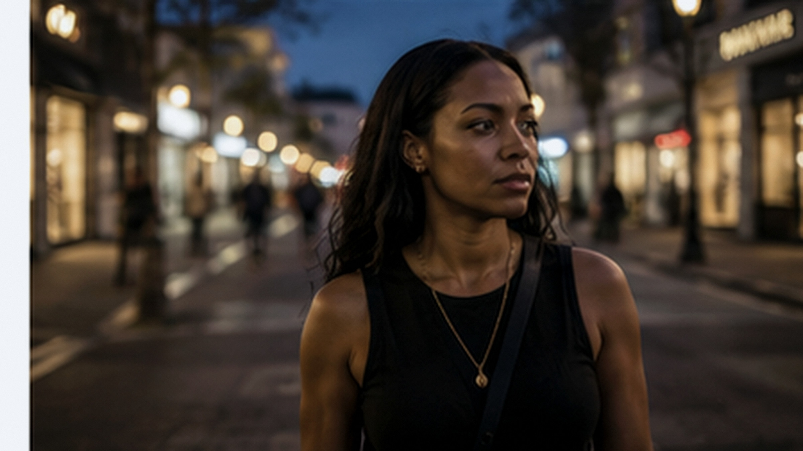
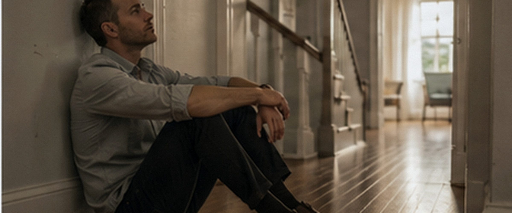

The method
A lion walks into your office.
It does not matter whether it is narcissistic or avoidant. You are not safe. You would not carry on working. Your whole system would take over — fight or run — before you had a chance to think about it.
That same mechanism fires when you feel triggered, overwhelmed, rejected, or under pressure. So the question is not how to fight the lion, or how to outrun it. It is what happens if you are steady enough that the room cannot take you over in the first place.
01 · Why knowing has never been enough
The body decides. Then you find out.
Two things happen, and not at the same time.
First your body protects you. It commits to a response before you have processed a single word. Heart, breath, jaw, hands — all of it moving while you are still catching up.
Then your mind explains what happened. By which point the thing you needed — perspective, patience, the ability to choose — was not available. Not because you are weak. Because it goes offline first, by design.
So one more explanation of the pattern was never going to stop it. You already have the explanation. You have probably had it for years.
Automatic path
With regulation available
02 · What is actually holding you up
Scaffolding holds until the conditions change.
Before you could choose, people handed you beliefs about safety, success, love and what is possible. Some strengthened you. Some hurt you. Some were just somebody else’s idea of life, given to you before you could decide whether it was true. Eventually you started calling that collection me.
It works. It holds you up. And you do not notice it is holding you up until something takes a piece of it away.
Somebody says something. Somebody reacts in a way you were not expecting. Something you were counting on does not arrive. And you drop — and then do something that looks nothing like the person you were trying to be.
It was never the comment. It is that you needed the comment to go a certain way in order to stay composed. You were being held up from the outside. And the outside moved.
03 · The state it is holding
Your body already knows which one.
Watch the state, not the story. You move across a range, and only one part of it gives you perspective, patience and judgement.
Wound up
Everything needs handling, now.
Racing, bracing, scanning. Short with people you love. The reaction is out before you decided on it.
Steady
This is hard. I can deal with it.
Shoulders drop, breath opens, attention comes back. The hard thing has not moved. You have options in front of it.
Flat
None of it is worth the energy.
Distant, switched off, hard to reach — including for you. Not laziness. Your system saving what is left.

You already know your steady self. The work is getting back there on purpose, instead of waiting for the day to hand it to you.
More speed. More scanning. More urgency to act.
Attention can widen enough for context and choice.
Less access to movement, voice, motivation and response.
04 · None of this started here
People kept finding the same instrument.
Go back far enough and you find people in almost every part of the world arriving at the same thing. Separately. With no contact between them.
In India they worked with the breath — lengthening it, slowing it, watching it — thousands of years ago. In China the same: breath, posture and attention held together. Buddhist monks followed a single breath in and out and built a discipline on it.
The desert monks of early Christianity repeated one phrase until the noise went quiet. Jewish prayer had its own solitude and its own address to the heart. Muslim practice had remembrance — a name repeated, breath by breath, until the body settled. The Stoics in Rome just called it attention. Watch what arrives. Do not be governed by it.
Different languages. Different gods. Different centuries.
They all arrived at the same four operations. Slow the breath. Turn the attention inward. Name what is there. Come back to a settled place.
That is not a coincidence and it is not a belief system. That is people finding the same instrument over and over, because it was already in them. It is already in you. It has been the whole time.

05 · The four steps
The same order, every time.
A route your body learns to recognise, so on a bad day you are not deciding what to do. You are following something you already know.
Step 01
Recognise
Say what is actually there, specifically. Not “I feel anxious” — finish the sentence. What I am afraid will happen is ___. Being precise settles something on its own.
Porges
Step 02
Regulate
Hand on your chest. In for four, out for six. Your body will not take an argument for safety. It takes evidence, and a slower breath out is the evidence.
HeartMath
Step 03
Release
Stop the second fight — the one against how you feel about how you feel. You are not agreeing with it. You are stopping the struggle, including the part aimed at yourself.
Maté
Step 04
Rise
Still breathing that way, be the person on the other side of it for one breath. Not a plan. Not a decision. One breath, so your body knows the way back.
Kross & Ayduk
Recognise
Notice what has taken the wheel.
Regulate
Give the system enough resource to stay with the moment.
Release
Let held activation move instead of becoming the next story.
Rise
Return with more choice about what happens next.
06 · Why the long breath out
Six breaths a minute is where it settles.
Around six breaths a minute is where the gap between your heartbeats becomes most even. Not a mood. Something measurable, and something you can do on purpose in a car park.
The breath out is the part that does the work. Breathing out for longer than you breathe in tips the balance towards the branch of your system that handles rest rather than threat. The rhythm of your heart becomes more ordered, and your brain reads that order as evidence rather than as an argument.
No force. No perfect count. Your body reads the rhythm before your mind has agreed to anything — which is the point, because on a bad day your mind is not agreeing to much.
The visual is deliberately simple: the exhale lasts longer than the inhale. It is a pacing cue, not a performance target.
07 · What this rests on
Six frameworks, and which is which.
Psychology platforms are everywhere now and it has got noisy. Most of it hands you more labels without building any more capacity. So here is what this rests on, and which part is evidence and which part is a way of looking at things.

Peer-reviewed
Published, replicated research
Stephen Porges · Polyvagal Theory
Why safety runs everything underneath, and why those three states are a range you move across rather than moods you are in.
HeartMath · Cardiac coherence
What a paced breath does to the rhythm of the heart, measured.
Kross & Ayduk · Distanced self-talk
Looking at a state from outside it, and what that changes about what you can do next.
Clinical practice
An established practitioner method
Gabor Maté · Compassionate Inquiry
Asking what a pattern was protecting, instead of asking how to make it stop.
A way of looking
A lens, not evidence — and said so
Carl Jung · Shadow and individuation
Naming what is actually there, and the self you choose rather than the one you were handed.
Alan Watts · Non-resistance
What happens when you stop the second fight.